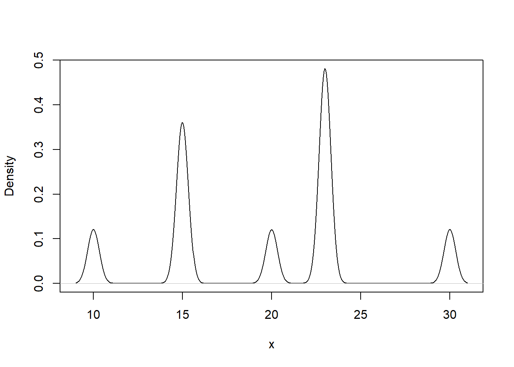

Chapter 3 Modeling Loss Severities
This file contains illustrative R code for computing important count distributions. When reviewing this code, you should open an R session, copy-and-paste the code, and see it perform. Then, you will be able to change parameters, look up commands, and so forth, as you go.
3.1 Required packages
library(actuar)
library(VGAM)3.2 Gamma Distribution
This section demonstrates the effect of the shape and scale parameters on the gamma density.
3.2.1 Varying the shape parameter
The graph shows the Gamma density functions with varying shape parameters \((\alpha)\)
# Example 1: gamma distribution
# define a grid
x <- seq(0,1000,by=1)
# define a set of scale and shape parameters
scaleparam <- seq(100,250,by=50)
shapeparam <- 2:5
# varying the shape parameter
plot(x, dgamma(x, shape = shapeparam[1], scale = 100), type = "l", ylab = "Gamma density")
for(k in 2:length(shapeparam)){
lines(x,dgamma(x,shape = shapeparam[k], scale = 100), col = k)
}
legend("topright", c(expression(alpha~'=2'), expression(alpha~'=3'), expression(alpha~'=4'), expression(alpha~'=5')), lty=1, col = 1:4)
title(substitute(paste("Pdf gamma density with"," ",theta,"=100"," ", "and varying shape")))
A few quick notes on these commands :
3.2.2 Varying the scale parameter
The graph shows the Gamma density functions with varying scale parameters \((\theta)\)
plot(x, dgamma(x, shape = 2, scale = scaleparam[1]), type = "l", ylab = "Gamma density")
for(k in 2:length(scaleparam)){
lines(x,dgamma(x,shape = 2, scale = scaleparam[k]), col = k)
}
legend("topright", c(expression(theta~'=100'), expression(theta~'=150'), expression(theta~'=200'), expression(theta~'=250')), lty=1, col = 1:4)
title(substitute(paste("Pdf gamma density with"," ",alpha,"=2"," ", "and varying scale")))
knitr::include_app("https://luyang.shinyapps.io/gamma/",
height = "600px")3.3 Pareto Distribution
This section demonstrates the effect of the shape and scale parameters on the Pareto density function.
3.3.1 Varying the shape parameter
The graph shows the Pareto density functions with varying shape parameters \((\alpha)\)
z<- seq(0,3000,by=1)
scaleparam <- seq(2000,3500,500)
shapeparam <- 1:4
# varying the shape parameter
plot(z, dparetoII(z, loc=0, shape = shapeparam[1], scale = 2000), ylim=c(0,0.002),type = "l", ylab = "Pareto density")
for(k in 2:length(shapeparam)){
lines(z,dparetoII(z,loc=0, shape = shapeparam[k], scale = 2000), col = k)
}
legend("topright", c(expression(alpha~'=1'), expression(alpha~'=2'), expression(alpha~'=3'), expression(alpha~'=4')), lty=1, col = 1:4)
title(substitute(paste("Pdf Pareto density with"," ",theta,"=2000"," ", "and varying shape")))
3.3.2 Varying the scale parameter
The graph shows the Pareto density functions with varying scale parameters \((\theta)\)
plot(z, dparetoII(z, loc=0, shape = 3, scale = scaleparam[1]), type = "l", ylab = "Pareto density")
for(k in 2:length(scaleparam)){
lines(z,dparetoII(z,loc=0, shape = 3, scale = scaleparam[k]), col = k)
}
legend("topright", c(expression(theta~'=2000'), expression(theta~'=2500'), expression(theta~'=3000'), expression(theta~'=3500')), lty=1, col = 1:4)
title(substitute(paste("Pdf Pareto density with"," ",alpha,"=3"," ", "and varying scale")))
3.4 Weibull Distribution
This section demonstrates the effect of the shape and scale parameters on the Weibull density function.
3.4.1 Varying the shape parameter
The graph shows the Weibull density function with varying shape parameters \((\alpha)\)
z<- seq(0,400,by=1)
scaleparam <- seq(50,200,50)
shapeparam <- seq(1.5,3,0.5)
# varying the shape parameter
plot(z, dweibull(z, shape = shapeparam[1], scale = 100), ylim=c(0,0.012), type = "l", ylab = "Weibull density")
for(k in 2:length(shapeparam)){
lines(z,dweibull(z,shape = shapeparam[k], scale = 100), col = k)
}
legend("topright", c(expression(alpha~'=1.5'), expression(alpha~'=2'), expression(alpha~'=2.5'), expression(alpha~'=3')), lty=1, col = 1:4)
title(substitute(paste("Pdf Weibull density with"," ",theta,"=100"," ", "and varying shape")))
3.4.2 Varying the scale parameter
The graph shows the Weibull density function with varying scale parameters \((\theta)\)
plot(z, dweibull(z, shape = 3, scale = scaleparam[1]), type = "l", ylab = "Weibull density")
for(k in 2:length(scaleparam)){
lines(z,dweibull(z,shape = 3, scale = scaleparam[k]), col = k)
}
legend("topright", c(expression(theta~'=50'), expression(theta~'=100'), expression(theta~'=150'), expression(theta~'=200')), lty=1, col = 1:4)
title(substitute(paste("Pdf Weibull density with"," ",alpha,"=3"," ", "and varying scale")))
3.5 The Generalized Beta Distribution of the Second Kind (GB2)
This section demonstrates the effect of the shape and scale parameters on the GB2 density function.
3.5.1 Varying the scale parameter
The graph shows the GB2 density function with varying scale parameter \((\theta)\)
## Example 4:GB2
gb2density <- function(x,shape1,shape2,shape3,scale){
mu <- log(scale)
sigma <- 1/shape3
xt <- (log(x)-mu)/sigma
logexpxt<-ifelse(xt>23,yt,log(1+exp(xt)))
logdens <- shape1*xt - log(sigma) - log(beta(shape1,shape2)) - (shape1+shape2)*logexpxt -log(x)
exp(logdens)
}
x<- seq(0,400,by=1)
alpha1<-5
alpha2<-4
gamma <-2
theta <- seq(150,250,50)
# varying the scale parameter
plot(x, gb2density(x, shape1=alpha1,shape2=alpha2,shape3=gamma, scale = theta[1]),
type = "l", ylab = "Gen Beta 2 density",
main =
expression(paste("GB2 density with ", alpha[1], "=5,", alpha[2], "=4,", alpha[3],
"=2, and varying scale (",theta, ") parameters")) )
for(k in 2:length(theta)){
lines(x,gb2density(x,shape1=alpha1,shape2=alpha2,shape3=gamma, scale = theta[k]), col = k)
}
legend("topleft", c(expression(theta~'=150'), expression(theta~'=200'), expression(theta~'=250')), lty=1, cex=0.6,col = 1:3)
Note: Here we wrote our own function for the density function of the GB2 density function.
3.6 Methods of creating new distributions
This section shows some of the methods of creating new distributions.
3.6.1 Mixture distributions
The graph below creates a density function from two random variables that follow a gamma distribution.
## Example 5: A mixed density
## specify density of a mixture of 2 gamma distributions
MixtureGammaDensity <- function(x, a1, a2, alphaGamma1, thetaGamma1, alphaGamma2, thetaGamma2){
a1 * dgamma(x, shape = alphaGamma1, scale = thetaGamma1) + a2 * dgamma(x, shape = alphaGamma2, scale = thetaGamma2)
}
w <- 1:30000/100
a1<-0.5
a2<-0.5
alpha1 <- 4
theta1 <- 7
alpha2 <- 15
theta2 <- 7
MixGammadens <- MixtureGammaDensity(w, a1,a2,alpha1, theta1, alpha2, theta2)
plot(w, MixGammadens, type = "l")3.6.2 Density obtained through splicing
The graph below shows a density function through splicing by combining an exponential distribution on \((0,c)\) with a Pareto distribution on \((c,\infty)\)
##Example 6: density obtained through splicing
## combine an Exp on (0,c) with a Pareto on (c,\infty)
SpliceExpPar <- function(x, c, v, theta, gamma, alpha){
if(0<=x & x<c){return(v * dexp(x, 1/theta)/pexp(c,1/theta))}else
if(x>=c){return((1-v)*dparetoII(x,loc=0, shape = alpha, scale = theta)/(1-pparetoII(x,loc=0, shape = alpha, scale = theta)))}
}
x <- t(as.matrix(1:2500/10))
spliceValues <- apply(x,2,SpliceExpPar, c = 100, v = 0.6, theta = 100, gamma = 200, alpha = 4)
plot(x,spliceValues, type = 'l')3.7 Coverage Modifications
This file contains illustrative R code for computing important count distributions. When reviewing this code, you should open an R session, copy-and-paste the code, and see it perform. Then, you will be able to change parameters, look up commands, and so forth, as you go.
3.7.1 Load required package
The actuar package provides functions for dealing with coverage modifications. In the following sections we will check the functionalities of the coverage command.
library(actuar)3.7.2 Ordinary deductible
This section plots the modified probability density functions due to deductibles for the payment per loss and payment per payment random variables.
3.7.2.1 Payment per loss with ordinary deductible
Let \(X\) be the random variable for loss size. The random variable for the payment per loss with deductible \(d\) is \(Y^L=(X-d)_+\). The plot of the modified probability density function is below.
f <- coverage(dgamma, pgamma, deductible = 1, per.loss = TRUE)# create the object
mode(f) # it's a function. Here deductible is 1[1] "function"### Check the pdf for Y^L at 0 and the original loss at 1
f(0, 3) # mass at 0[1] 0.0803014pgamma(0+1, 3) # idem[1] 0.0803014curve(dgamma(x, 3), from = 0, to = 10, ylim = c(0, 0.3), lwd=1, col="gray") # original
curve(dgamma(x, 3), from = 1, to = 10, ylim = c(0, 0.3), lwd=2, add=TRUE)
curve(f(x, 3), from = 0.01, col = "blue", add = TRUE, lwd=2) # modified
points(0, f(0, 3), pch = 16, col = "blue")
legend("topright", c("Original pdf", "Modified pdf"), lty=1, cex=0.6,col = c("black","blue"))A few quick notes on these commands:
- The
coverage()function computes probability density function or cumulative distribution function of the payment per payment or payment per loss random variable under any combination of the following coverage modifications: deductible, limit, coinsurance, inflation. In this illustration we used it to compute the probability density function of the payment per loss random variable with a deductible of 1. - The
f(0, 3)function calculates the pdf when the payment per loss variable is 0 with gamma parameters shape=3 and rate=1. Because we used a deductible of 1 , this should be equal topgamma(0+1, 3).
3.7.2.2 Payment per payment with ordinary deductible
\(Y^P\) with pdf \(f_{Y^P}(y) = f_X(y+d)/S_X(d)\)
f <- coverage(dgamma, pgamma, deductible = 1) # create the object
f(0, 3) # calculate in x = 0, shape=3, rate=1[1] 0f(5, 3) # calculate in x = 5, shape=3, rate=1[1] 0.04851322dgamma(5 + 1, 3)/pgamma(1, 3, lower = FALSE) # DIY[1] 0.04851322curve(dgamma(x, 3), from = 0, to = 10, ylim = c(0, 0.3), lwd=1,col="gray") # original pdf
curve(dgamma(x, 3), from = 1, to = 10, ylim = c(0, 0.3), add=TRUE, lwd=2)
curve(f(x, 3), from = 0.01, col = "blue", add = TRUE,lwd=2) # modified pdf
legend("topright", c("Original pdf", "Modified pdf"), lty=1, cex=0.6,col = c("black","blue"))
3.7.2.3 per payment variable with policy limit, coinsurance and inflation
f <- coverage(dgamma, pgamma, deductible = 1, limit = 100, coinsurance = 0.9, inflation = 0.05) # create the object
f(0, 3) # calculate in x = 0, shape=3, rate=1[1] 0f(5, 3) # calculate in x = 5, shape=3, rate=1[1] 0.0431765curve(dgamma(x, 3), from = 0, to = 10, ylim = c(0, 0.3), lwd=1,col="gray")# original pdf
curve(dgamma(x, 3), from = 1, to = 10, ylim = c(0, 0.3), add=TRUE, lwd=2)
curve(f(x, 3), from = 0.01, col = "blue", add = TRUE,lwd=2) # modified pdf
legend("topright", c("Original pdf", "Modified pdf"), lty=1, cex=0.6,col = c("black","blue"))
3.7.3 Franchise deductible
A policy with a franchise deductible of \(d\) pays nothing if the loss is no greater than \(d\), and pays the full amount of the loss if it is greater than \(d\). This section plots the pdf for the per payment and per loss random variable.
3.7.3.1 Payment per loss with franchise deductible
# franchise deductible
# per loss variable
f <- coverage(dgamma, pgamma, deductible = 1,
per.loss = TRUE, franchise = TRUE)
f(0, 3) # mass at 0[1] 0.0803014pgamma(1, 3) # idem[1] 0.0803014f(0.5, 3) # 0 < x < 1[1] 0f(1, 3) # x = 1[1] 0f(5, 3) # x > 1[1] 0.08422434dgamma(5,3)[1] 0.08422434curve(dgamma(x, 3), from = 0, to = 10, ylim = c(0, 0.3)) # original
curve(f(x, 3), from = 1.1, col = "blue", add = TRUE) # modified
points(0, f(0, 3), pch = 16, col = "blue") # mass at 0
curve(f(x, 3), from = 0.1, to = 1, col = "blue", add = TRUE) # 0 < x < 1
legend("topright", c("Original pdf", "Modified pdf"), lty=1, cex=0.6,col = c("black","blue"))Note : to use the franchise deductible , we have to add the option franchise = TRUE in the coverage function.
3.7.3.2 Payment per payment with franchise deductible
# franchise deductible
# per payment variable
f <- coverage(dgamma, pgamma, deductible = 1, franchise = TRUE)
f(0, 3) # x = 0[1] 0f(0.5, 3) # 0 < x < 1[1] 0f(1, 3) # x = 1[1] 0f(5, 3) # x > 1[1] 0.09157819dgamma(5, 3)/pgamma(1, 3, lower = FALSE) # idem[1] 0.09157819curve(dgamma(x, 3), from = 0, to = 10, ylim = c(0, 0.3)) # original
curve(f(x, 3), from = 1.1, col = "blue", add = TRUE) # modified
curve(f(x, 3), from = 0, to = 1, col = "blue", add = TRUE) # 0 < x < 1
legend("topright", c("Original pdf", "Modified pdf"), lty=1, cex=0.6,col = c("black","blue"))
3.8 MLE for grouped data
This file contains illustrative R code for computing important count distributions. When reviewing this code, you should open an R session, copy-and-paste the code, and see it perform. Then, you will be able to change parameters, look up commands, and so forth, as you go.
3.8.1 MLE for grouped data- SOA Exam C # 276
Losses follow the distribution function \(F(x)=1-(\theta/x),\quad x>0\). A sample of 20 losses resulted in the following:
| Interval | Number of Losses |
|---|---|
| (0,10] | 9 |
| (10,25] | 6 |
| (25,infinity) | 5 |
Calculate the maximum likelihood estimate of \(\theta\).
##Log Likelihood function
likgrp <- function(theta) {
loglike <-log(((1-(theta/10))^9)*(((theta/10)-(theta/25))^6)* (((theta/25))^5))
return(-sum(loglike))
}
# "optim" is a general purpose minimization function
grplik <- optim(c(1),likgrp,method=c("L-BFGS-B"),hessian=TRUE)
#Estimates - Answer "B" on SoA Problem
grplik$par[1] 5.5#standard error
sqrt(diag(solve(grplik$hessian)))[1] 1.11243#t-statistics
(tstat = grplik$par/sqrt(diag(solve(grplik$hessian))) )[1] 4.944132#Plot of Negative Log-Likelihood function
vllh = Vectorize(likgrp,"theta")
theta=seq(0,10, by=0.01)
plot(theta, vllh(theta), pch=16, main ="Negative Log-Likelihood function" , cex=.25,
xlab=expression(theta), ylab=expression(paste("L(",theta,")")))3.9 Nonparametric Inference
This file contains illustrative R code for computing important count distributions. When reviewing this code, you should open an R session, copy-and-paste the code, and see it perform. Then, you will be able to change parameters, look up commands, and so forth, as you go. This code uses the dataset CLAIMLEVEL.csv
3.9.1 Nonparametric Estimation Tools
This section illustrates non-parametric tools including moment estimators, empirical distribution function, quantiles and density estimators.
3.9.1.1 Moment estimators
The \(kth\) moment \(EX^k\) is estimated by \(\frac{1}{n}\sum_{i=1}^{n}X_i^k\). When \(k=1\) then the estimator is called the sample mean.The central moment is defined as \(E(X-\mu)^k\). When \(k=2\), then the central moment is called variance. Below illustrates the mean and variance.
# Start with a simple example of ten points
(xExample = c(10,rep(15,3),20,rep(23,4),30)) [1] 10 15 15 15 20 23 23 23 23 30##summary
summary(xExample) # mean Min. 1st Qu. Median Mean 3rd Qu. Max.
10.0 15.0 21.5 19.7 23.0 30.0 sd(xExample)^2 # variance [1] 34.455563.9.1.2 Empirical Distribution function
The graph below gives the empirical distribution function xExample dataset.
PercentilesxExample <- ecdf(xExample)
###Empirical Distribution Function
plot(PercentilesxExample, main="",xlab="x")3.9.1.3 Quantiles
The results below gives the quantiles.
##quantiles
quantile(xExample) 0% 25% 50% 75% 100%
10.0 15.0 21.5 23.0 30.0 #quantiles : set you own probabilities
quantile(xExample, probs = seq(0, 1, 0.333333)) 0% 33.3333% 66.6666% 99.9999%
10.00000 15.00000 23.00000 29.99994 #help(quantile)3.9.1.4 Density Estimators
The results below gives the density plots using the uniform kernel and triangular kernel.
##density plot
plot(density(xExample), main="", xlab="x")plot(density(xExample, bw=.33), main="", xlab="x") # Change the bandwidth
plot(density(xExample, kernel = "triangular"), main="", xlab="x") # Change the kernel3.9.2 Property Fund Data
This section employs non-parametric estimation tools for model selection for the claims data of the Property Fund.
3.9.2.1 Empirical distribution function of Property fund
The results below gives the empirical distribution function of the claims and claims in logarithmic units.
ClaimLev <- read.csv("DATA/CLAIMLEVEL.csv", header=TRUE); nrow(ClaimLev); # 6258[1] 6258ClaimData<-subset(ClaimLev,Year==2010); #2010 subset
##Empirical distribution function of Property fund
par(mfrow=c(1, 2))
Percentiles <- ecdf(ClaimData$Claim)
LogPercentiles <- ecdf(log(ClaimData$Claim))
plot(Percentiles, main="", xlab="Claims")
plot(LogPercentiles, main="", xlab="Logarithmic Claims")
3.9.2.2 Density Comparison
shows a histogram (with shaded gray rectangles) of logarithmic property claims from 2010. The blue thick curve represents a Gaussian kernel density where the bandwidth was selected automatically using an ad hoc rule based on the sample size and volatility of the data.
#Density Comparison
hist(log(ClaimData$Claim), main="", ylim=c(0,.35),xlab="Log Expenditures", freq=FALSE, col="lightgray")
lines(density(log(ClaimData$Claim)), col="blue",lwd=2.5)
lines(density(log(ClaimData$Claim), bw=1), col="green")
lines(density(log(ClaimData$Claim), bw=.1), col="red", lty=3)
density(log(ClaimData$Claim))$bw ##default bandwidth[1] 0.32559083.9.3 Nonparametric Estimation Tools For Model Selection
3.9.3.1 Fit Distributions To The Claims Data
The results below fits Gamma and Pareto distribution to the claims data
library(MASS)
library(VGAM)
# Inference assuming a gamma distribution
fit.gamma2 <- glm(Claim~1, data=ClaimData,family=Gamma(link=log))
summary(fit.gamma2, dispersion = gamma.dispersion(fit.gamma2))
Call:
glm(formula = Claim ~ 1, family = Gamma(link = log), data = ClaimData)
Deviance Residuals:
Min 1Q Median 3Q Max
-4.287 -2.258 -1.764 -1.178 30.926
Coefficients:
Estimate Std. Error z value Pr(>|z|)
(Intercept) 10.18952 0.04999 203.8 <2e-16 ***
---
Signif. codes: 0 '***' 0.001 '**' 0.01 '*' 0.05 '.' 0.1 ' ' 1
(Dispersion parameter for Gamma family taken to be 3.441204)
Null deviance: 6569.1 on 1376 degrees of freedom
Residual deviance: 6569.1 on 1376 degrees of freedom
AIC: 28414
Number of Fisher Scoring iterations: 14(theta<-exp(coef(fit.gamma2))*gamma.dispersion(fit.gamma2)) #mu=theta/alpha(Intercept)
91613.78 (alpha<-1/gamma.dispersion(fit.gamma2) )[1] 0.2905959# Inference assuming a Pareto Distribution
fit.pareto <- vglm(Claim ~ 1, paretoII, loc=0, data = ClaimData)
summary(fit.pareto)
Call:
vglm(formula = Claim ~ 1, family = paretoII, data = ClaimData,
loc = 0)
Pearson residuals:
Min 1Q Median 3Q Max
loge(scale) -6.332 -0.8289 0.1875 0.8832 1.174
loge(shape) -10.638 0.0946 0.4047 0.4842 0.513
Coefficients:
Estimate Std. Error z value Pr(>|z|)
(Intercept):1 7.7329210 0.0933332 82.853 <2e-16 ***
(Intercept):2 -0.0008753 0.0538642 -0.016 0.987
---
Signif. codes: 0 '***' 0.001 '**' 0.01 '*' 0.05 '.' 0.1 ' ' 1
Number of linear predictors: 2
Names of linear predictors: loge(scale), loge(shape)
Log-likelihood: -13404.64 on 2752 degrees of freedom
Number of iterations: 5
No Hauck-Donner effect found in any of the estimateshead(fitted(fit.pareto)) [,1]
[1,] 2285.03
[2,] 2285.03
[3,] 2285.03
[4,] 2285.03
[5,] 2285.03
[6,] 2285.03exp(coef(fit.pareto))(Intercept):1 (Intercept):2
2282.2590626 0.9991251 3.9.3.2 Graphical Comparison of Distributions
The graphs below reinforces the technique of overlaying graphs for comparison purposes using both the distribution function and density function. Pareto distribution provides a better fit.
# Plotting the fit using densities (on a logarithmic scale)
# None of these distributions is doing a great job....
x <- seq(0,15,by=0.01)
par(mfrow=c(1, 2))
LogPercentiles <- ecdf(log(ClaimData$Claim))
plot(LogPercentiles, main="", xlab="Claims", cex=0.4)
Fgamma_ex = pgamma(exp(x), shape = alpha, scale=theta)
lines(x,Fgamma_ex,col="blue")
Fpareto_ex = pparetoII(exp(x),loc=0,shape = exp(coef(fit.pareto)[2]), scale = exp(coef(fit.pareto)[1]))
lines(x,Fpareto_ex,col="purple")
legend("bottomright", c("log(claims)", "Gamma","Pareto"), lty=1, cex=0.6,col = c("black","blue","purple"))
plot(density(log(ClaimData$Claim)) ,main="", xlab="Log Expenditures")
fgamma_ex = dgamma(exp(x), shape = alpha, scale=theta)*exp(x)
lines(x,fgamma_ex,col="blue")
fpareto_ex = dparetoII(exp(x),loc=0,shape = exp(coef(fit.pareto)[2]), scale = exp(coef(fit.pareto)[1]))*exp(x)
lines(x,fpareto_ex,col="purple")
legend("topright", c("log(claims)", "Gamma","Pareto"), lty=1, cex=0.6,col = c("black","blue","purple"))3.9.3.3 P-P plots
shows \(pp\) plots for the Property Fund data; the fitted gamma is on the left and the fitted Pareto is on the right. Pareto distribution provides a better fit again
# PP Plot
par(mfrow=c(1, 2))
Fgamma_ex = pgamma(ClaimData$Claim, shape = alpha, scale=theta)
plot(Percentiles(ClaimData$Claim),Fgamma_ex, xlab="Empirical DF", ylab="Gamma DF",cex=0.4)
abline(0,1)
Fpareto_ex = pparetoII(ClaimData$Claim,loc=0,shape = exp(coef(fit.pareto)[2]), scale = exp(coef(fit.pareto)[1]))
plot(Percentiles(ClaimData$Claim),Fpareto_ex, xlab="Empirical DF", ylab="Pareto DF",cex=0.4)
abline(0,1)
#dev.off()3.9.3.4 q-q plots
In the graphs below the quantiles are plotted on the original scale in the left-hand panels, on the log scale in the right-hand panel, to allow the analyst to see where a fitted distribution is deficient
##q-q plot
par(mfrow=c(2, 2))
xseq = seq(0.0001, 0.9999, by=1/length(ClaimData$Claim))
empquant = quantile(ClaimData$Claim, xseq)
Gammaquant = qgamma(xseq, shape = alpha, scale=theta)
plot(empquant, Gammaquant, xlab="Empirical Quantile", ylab="Gamma Quantile")
abline(0,1)
plot(log(empquant), log(Gammaquant), xlab="Log Emp Quantile", ylab="Log Gamma Quantile")
abline(0,1)
Paretoquant = qparetoII(xseq,loc=0,shape = exp(coef(fit.pareto)[2]), scale = exp(coef(fit.pareto)[1]))
plot(empquant, Paretoquant, xlab="Empirical Quantile", ylab="Pareto Quantile")
abline(0,1)
plot(log(empquant), log(Paretoquant), xlab="Log Emp Quantile", ylab="Log Pareto Quantile")
abline(0,1)3.9.3.5 Goodness of Fit Statistics
For reporting results, it can be effective to supplement graphical displays with selected statistics that summarize model goodness of fit. The results below provides three commonly used goodness of fit statistics.
library(goftest )
#Kolmogorov-Smirnov # the test statistic is "D"
ks.test(ClaimData$Claim, "pgamma", shape = alpha, scale=theta)
One-sample Kolmogorov-Smirnov test
data: ClaimData$Claim
D = 0.26387, p-value < 2.2e-16
alternative hypothesis: two-sidedks.test(ClaimData$Claim, "pparetoII",loc=0,shape = exp(coef(fit.pareto)[2]), scale = exp(coef(fit.pareto)[1]))
One-sample Kolmogorov-Smirnov test
data: ClaimData$Claim
D = 0.047824, p-value = 0.003677
alternative hypothesis: two-sided#Cramer-von Mises # the test statistic is "omega2"
cvm.test(ClaimData$Claim, "pgamma", shape = alpha, scale=theta)
Cramer-von Mises test of goodness-of-fit
Null hypothesis: Gamma distribution
with parameters shape = 0.290595934110839, scale =
91613.779421033
data: ClaimData$Claim
omega2 = 33.378, p-value = 2.549e-05cvm.test(ClaimData$Claim, "pparetoII",loc=0,shape = exp(coef(fit.pareto)[2]), scale = exp(coef(fit.pareto)[1]))
Cramer-von Mises test of goodness-of-fit
Null hypothesis: distribution 'pparetoII'
with parameters shape = 0.999125131378519, scale =
2282.25906257586
data: ClaimData$Claim
omega2 = 0.38437, p-value = 0.07947#Anderson-Darling # the test statistic is "An"
ad.test(ClaimData$Claim, "pgamma", shape = alpha, scale=theta)
Anderson-Darling test of goodness-of-fit
Null hypothesis: Gamma distribution
with parameters shape = 0.290595934110839, scale =
91613.779421033
data: ClaimData$Claim
An = Inf, p-value = 4.357e-07ad.test(ClaimData$Claim, "pparetoII",loc=0,shape = exp(coef(fit.pareto)[2]), scale = exp(coef(fit.pareto)[1]))
Anderson-Darling test of goodness-of-fit
Null hypothesis: distribution 'pparetoII'
with parameters shape = 0.999125131378519, scale =
2282.25906257586
data: ClaimData$Claim
An = 4.1264, p-value = 0.007567